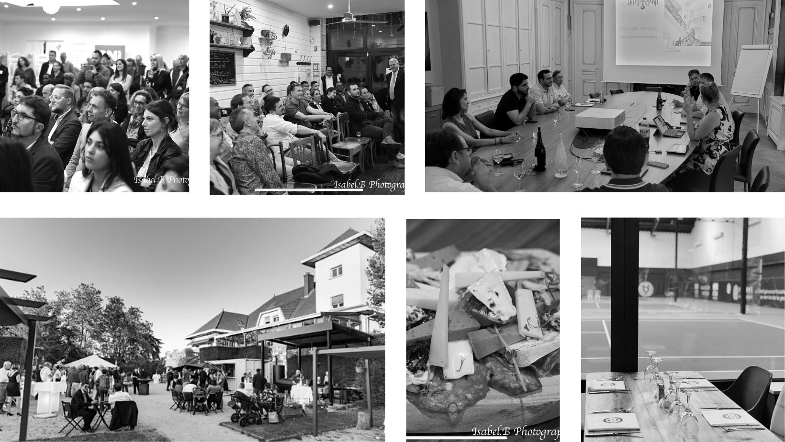
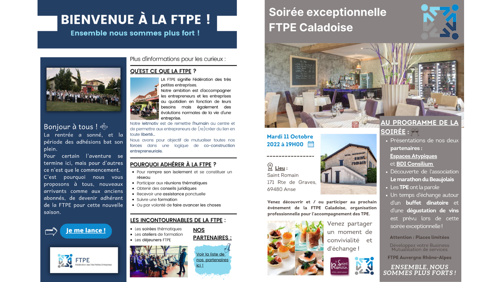

Dans le cadre de mes études en Bachelor, j’ai réalisé une alternance en tant que Chargée de Communication Marketing à La FTPE aussi connue sous le nom de Fédération des Très Petites Entreprises
Les TPE en France : quelques chiffres pour un désert de représentativité : Le nombre d’entreprises en France est 3,14 millions (en intégrant les autoentrepreneurs) d’après le dernier baromètre des TPE édité par l’IFOP et le groupe Fiducial. Ces 3,14 millions d’entreprises se décomposent de la manière suivante :
Les problématiques que rencontrent les TPE sont bien spécifiques à leur catégorie et très différentes de celles des PME, des ETI et des grands groupes. De manière générale, les TPE sont tournées vers l’économie locale et les circuits courts. Elles œuvrent notamment dans le commerce (22 % des TPE), les services aux entreprises (20 %) et la construction. (17 %) Les TPE et PME réalisent chaque année 1 300 Milliards d’euro de chiffre d’affaires, soit un peu plus du tiers (36%) du chiffre d’affaires total des entreprises françaises. (Source groupe Randstad) Les seules TPE comptent pour 20 % de l’emploi salarié total, avec un poids prépondérant dans la construction et l’hébergement-restauration. 317 000 TPE travaillent à l’export, soit environ 10.5 % des TPE
Pour rompre son isolement, se constituer un réseau, participer aux réunions thématiques, obtenir des conseils juridiques, recevoir une assistance ponctuelle, suivre une formation, ou par volonté de faire avancer les choses. Les partenariats et la mutualisation des moyens Notre ambition, au-delà de vous représenter au sein des organismes paritaires comme toutes les organisations professionnelles, est d’accompagner les entrepreneurs et les entreprises au quotidien en fonction de leurs besoins, mais également des évolutions normales de la vie d’une entreprise. Cet accompagnement n’a pas vocation à concurrencer des entreprises privées du secteur, mais plutôt à mutualiser des ressources et des moyens au travers de partenariats privilégiés afin de toujours pouvoir vous proposer une solution. Nous souhaitons également rompre l’isolement du chef d’entreprise au travers de réunions thématiques mensuelles sur l’ensemble du territoire. Nous souhaitons également participer à la montée en compétences des chefs d’entreprises grâce aux ateliers de formations réservés à nos adhérents. « Ne restez pas seul, ensemble nous sommes plus forts »
En tant que Chargé de Communication Marketing à la Fédération des Très Petites Entreprises pendant mon alternance en Bachelor, j'ai accompli plusieurs missions clé pour soutenir la communication et le marketing de la fédération. J'ai animé les réseaux sociaux en publiant du contenu régulièrement et en engageant avec la communauté en ligne. J'ai également créé du contenu pour les newsletters et la communication générale de la fédération. J'ai établi des partenariats avec d'autres entreprises et organisations pour renforcer la présence et la visibilité de la fédération. J'ai organisé des événements pour les entreprises, tels que des soirées, des afterworks, des formations et des déjeuners, qui ont permis de rassembler la communauté et de promouvoir les activités de la fédération. Enfin, j'ai été responsable de gérer les demandes de nos partenaires et adhérents, en veillant à ce qu'ils soient satisfaits et en travaillant avec eux pour répondre à leurs besoins de manière efficace. En général, j'ai joué un rôle clé dans la communication et le marketing de la fédération, en veillant à ce que les activités et les initiatives soient clairement communiquées et mises en avant.
En tant que Chargé de Communication Marketing à la Fédération des Très Petites Entreprises, j'ai organisé plusieurs événements pour soutenir les activités de la fédération et rassembler la communauté d'entreprises. Les événements incluaient des soirées de réseautage pour les entreprises, des afterworks pour renforcer les liens entre les membres, des formations pour renforcer les compétences des entreprises et des déjeuners pour discuter des initiatives et des activités de la fédération. Ces événements ont permis de promouvoir les activités de la fédération, de renforcer les liens entre les très petites entreprises, de rompre leur isolement et de leur fournir des opportunités pour améliorer leurs compétences et développer leur réseau. En organisant ces événements, j'ai joué un rôle clé dans la promotion de la fédération et dans le soutien des entreprises membres.
En tant que Chargé de Communication Marketing à la Fédération des Très Petites Entreprises, j'ai travaillé sur la mise en avant d'associations à travers les différentes soirées organisées par la fédération. Cette initiative visait à apporter une visibilité supplémentaire à ces associations et à les soutenir dans leurs efforts. Par exemple, lors de certaines soirées, nous avons mis en avant des associations telles que Aidons Marina et Le Marathon du Beaujolais. En mettant en avant ces associations, nous avons contribué à sensibiliser les membres de la fédération aux causes qu'elles soutiennent et les avons encouragés à les soutenir. De plus, cela a également donné une occasion supplémentaire pour les associations de faire connaître leur travail et de rencontrer de nouveaux soutiens potentiels. En travaillant sur cette initiative, j'ai contribué à renforcer les liens entre la fédération et les différentes associations, ainsi qu'à améliorer la visibilité de ces dernières.
Vous trouverez ci-joint des exemples de Newsletters que j'ai réalisé pour la FTPE:
